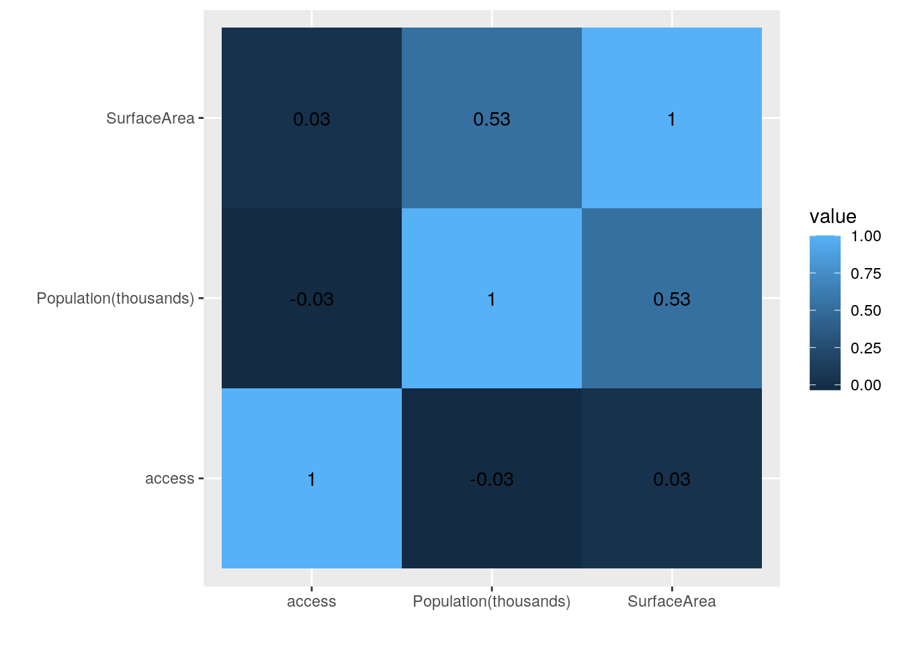
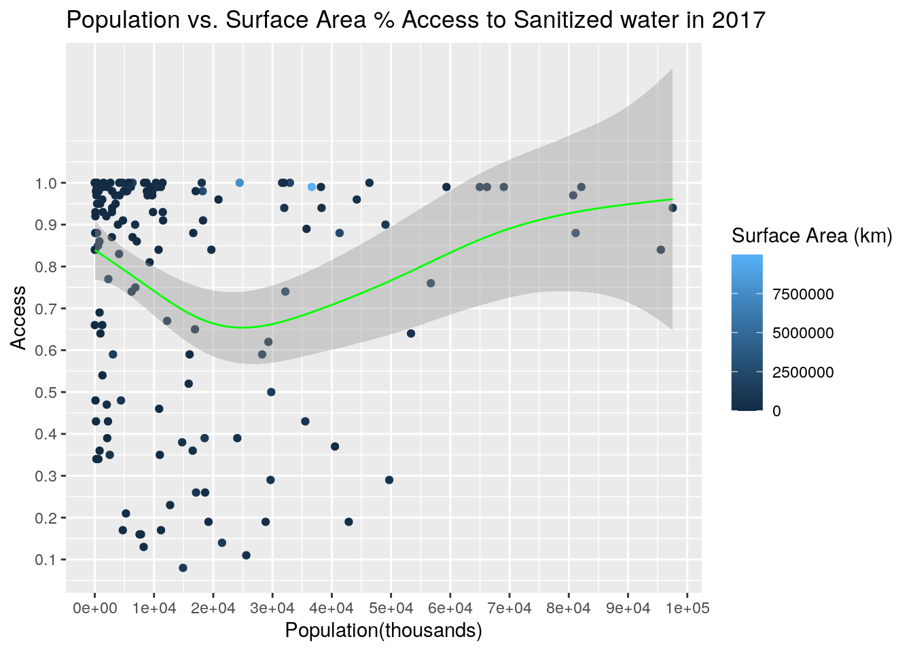
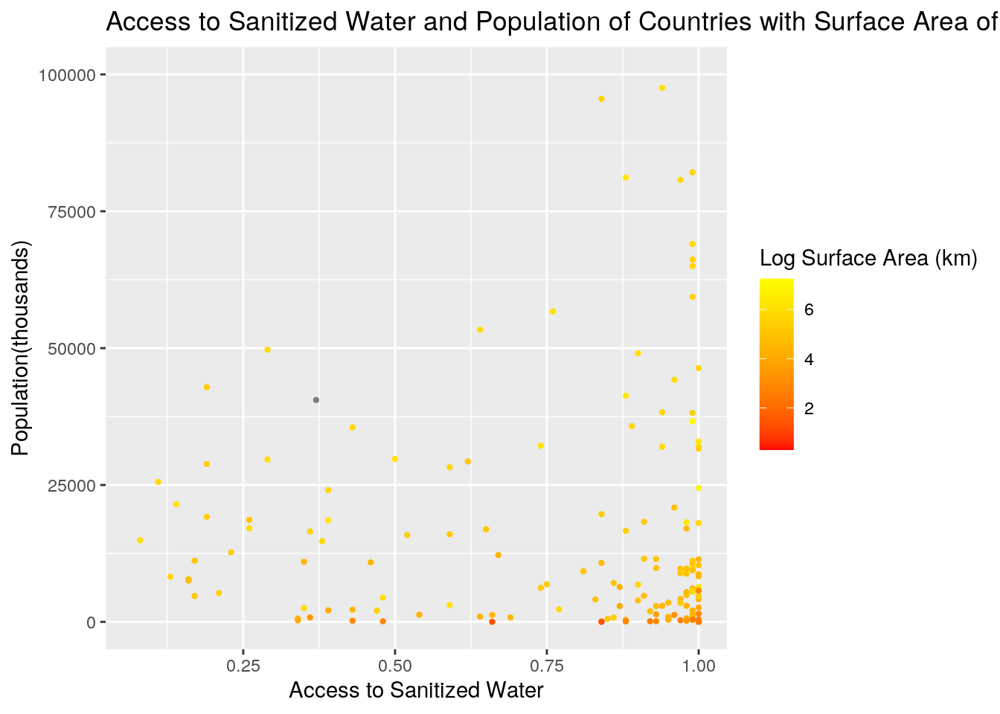
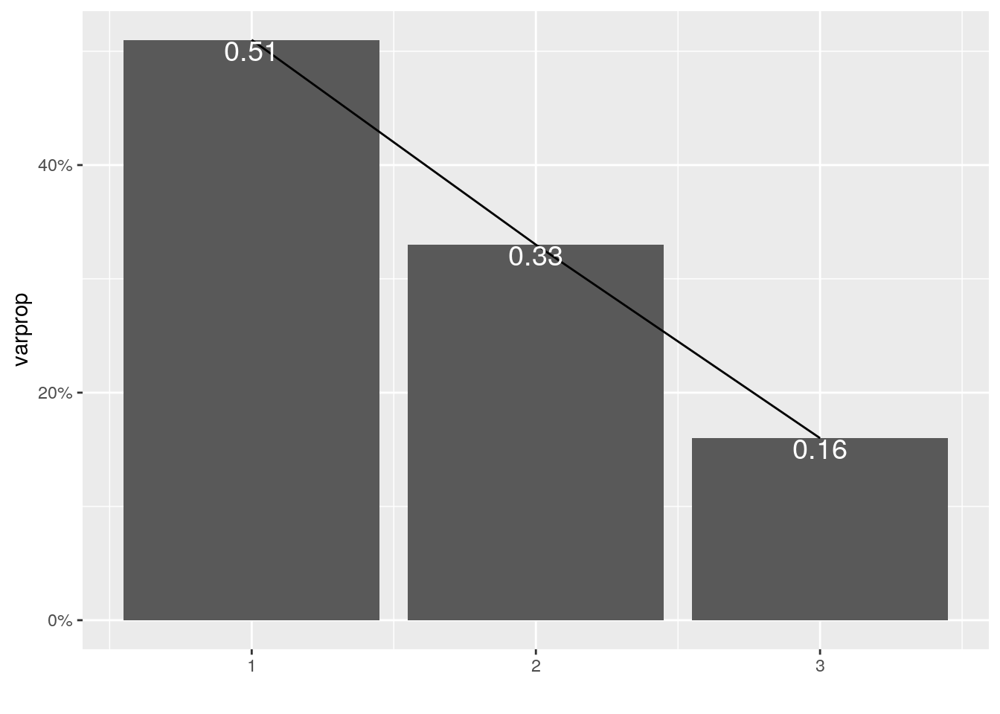
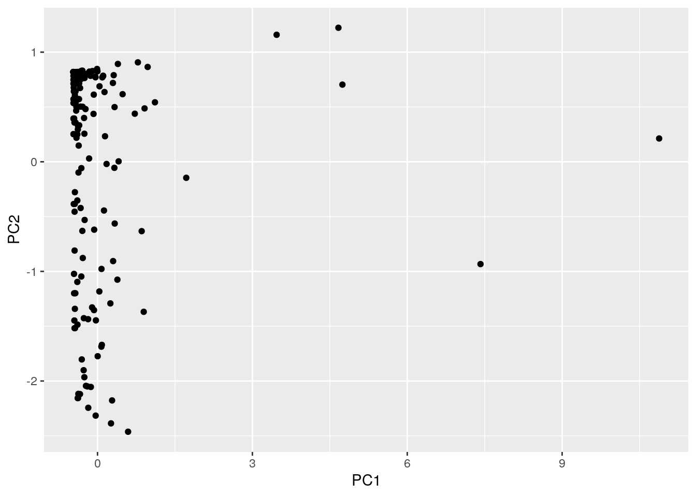
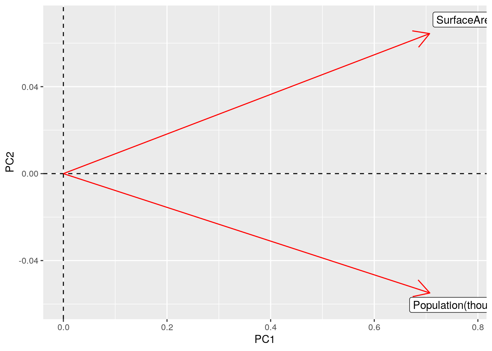

### Intro Packages and Data
library(dplyr)
library(tidyr)
library(ggplot2)
library(tibble)
library(readr)
Sanitation <- read_csv("/stor/home/sm44452/Project/Sanitation.csv")
Country_information <- read_csv("/stor/home/sm44452/Project/Country_information.csv")### Joined Data
Joined_Project <- Country_information %>% left_join(Sanitation)
Joined_Project %>% na.omit()## # A tibble: 170 x 5
## country Region SurfaceArea `Population(thousands)` access
## <chr> <chr> <dbl> <dbl> <dbl>
## 1 Afghanistan SouthernAsia 652864 35530 0.43
## 2 Albania SouthernEurope 28748 2930 0.98
## 3 Algeria NorthernAfrica 2381741 41318 0.88
## 4 Andorra SouthernEurope 468 77 1
## 5 Angola MiddleAfrica 1246700 29784 0.5
## 6 Antigua and Barbuda Caribbean 442 102 0.88
## 7 Armenia WesternAsia 29743 2930 0.94
## 8 Australia Oceania 7692060 24451 1
## 9 Austria WesternEurope 83871 8736 1
## 10 Azerbaijan WesternAsia 86600 9828 0.93
## # … with 160 more rows### Filter, Select, and Arrange Function
Joined_Project %>% filter(between(access, 0.9, 1))## # A tibble: 88 x 5
## country Region SurfaceArea `Population(thousands)` access
## <chr> <chr> <dbl> <dbl> <dbl>
## 1 Albania SouthernEurope 28748 2930 0.98
## 2 Andorra SouthernEurope 468 77 1
## 3 Armenia WesternAsia 29743 2930 0.94
## 4 Australia Oceania 7692060 24451 1
## 5 Austria WesternEurope 83871 8736 1
## 6 Azerbaijan WesternAsia 86600 9828 0.93
## 7 Bahamas Caribbean 13940 395 0.95
## 8 Bahrain WesternAsia 771 1493 1
## 9 Barbados Caribbean 431 286 0.97
## 10 Belarus EasternEurope 207600 9468 0.98
## # … with 78 more rowsJoined_Project %>% filter(Region == "WesternAsia") %>% select(access,
Region, country) %>% arrange(desc(access))## # A tibble: 17 x 3
## access Region country
## <dbl> <chr> <chr>
## 1 1 WesternAsia Bahrain
## 2 1 WesternAsia Israel
## 3 1 WesternAsia Kuwait
## 4 1 WesternAsia Malaysia
## 5 1 WesternAsia Oman
## 6 1 WesternAsia Qatar
## 7 1 WesternAsia Saudi Arabia
## 8 0.99 WesternAsia Cyprus
## 9 0.99 WesternAsia Lebanon
## 10 0.99 WesternAsia United Arab Emirates
## 11 0.97 WesternAsia Jordan
## 12 0.97 WesternAsia Tajikistan
## 13 0.97 WesternAsia Turkey
## 14 0.94 WesternAsia Armenia
## 15 0.94 WesternAsia Iraq
## 16 0.93 WesternAsia Azerbaijan
## 17 0.9 WesternAsia Georgia### Select Function and Correlation Matrix
cormat <- Joined_Project %>% na.omit() %>% select_if(is.numeric) %>%
cor()
head(cormat)## SurfaceArea Population(thousands) access
## SurfaceArea 1.0000000 0.52789336 0.02933050
## Population(thousands) 0.5278934 1.00000000 -0.03433209
## access 0.0293305 -0.03433209 1.00000000### Mutate Function
Joined_Project %>% mutate(access_pctile = ntile(access, 100)) %>%
na.omit()## # A tibble: 170 x 6
## country Region SurfaceArea `Population(thousa… access access_pctile
## <chr> <chr> <dbl> <dbl> <dbl> <int>
## 1 Afghanistan SouthernA… 652864 35530 0.43 16
## 2 Albania SouthernE… 28748 2930 0.98 57
## 3 Algeria NorthernA… 2381741 41318 0.88 38
## 4 Andorra SouthernE… 468 77 1 74
## 5 Angola MiddleAfr… 1246700 29784 0.5 20
## 6 Antigua and … Caribbean 442 102 0.88 38
## 7 Armenia WesternAs… 29743 2930 0.94 49
## 8 Australia Oceania 7692060 24451 1 75
## 9 Austria WesternEu… 83871 8736 1 76
## 10 Azerbaijan WesternAs… 86600 9828 0.93 46
## # … with 160 more rows## Pivot Wider
Joined_Project %>% select(-SurfaceArea, -`Population(thousands)`) %>%
pivot_wider(names_from = "Region", values_from = "access") %>%
summarize_if(is.numeric, mean, na.rm = T)## # A tibble: 1 x 22
## SouthernAsia SouthernEurope NorthernAfrica MiddleAfrica Caribbean SouthAmerica
## <dbl> <dbl> <dbl> <dbl> <dbl> <dbl>
## 1 0.694 0.935 0.832 0.391 0.849 0.892
## # … with 16 more variables: WesternAsia <dbl>, Oceania <dbl>,
## # WesternEurope <dbl>, EasternEurope <dbl>, CentralAmerica <dbl>,
## # WesternAfrica <dbl>, NorthernAmerica <dbl>, SouthernAfrica <dbl>,
## # `South-easternAsia` <dbl>, EasternAfrica <dbl>, EasternAsia <dbl>,
## # NorthernEurope <dbl>, Melanesia <dbl>, CentralAsia <dbl>, Micronesia <dbl>,
## # Polynesia <dbl>-I wanted to then see if different regions showed specific trends in terms of access. By performing the Pivot function on the data and viewing it wider I am able to see the mean access to sanitized water in each region without the other 3 variables. From this, Oceania, Central Asia, and Western Europe show some of the highest means. I did not perform a pivot longer function as this would not be an efficient way to view the data.
### Summary All Numeric variables
Joined_Project %>% summarize(SurfaceArea) %>% arrange(desc(SurfaceArea)) %>%
na.omit()## # A tibble: 180 x 1
## SurfaceArea
## <dbl>
## 1 17098246
## 2 9984670
## 3 9833517
## 4 9600000
## 5 8515767
## 6 7692060
## 7 3287263
## 8 2780400
## 9 2724902
## 10 2381741
## # … with 170 more rowsJoined_Project %>% summarize(`Population(thousands)`) %>% arrange(desc(`Population(thousands)`)) %>%
na.omit()## # A tibble: 180 x 1
## `Population(thousands)`
## <dbl>
## 1 1409517
## 2 1339180
## 3 324460
## 4 263991
## 5 209288
## 6 197016
## 7 190886
## 8 164670
## 9 143990
## 10 129163
## # … with 170 more rowsJoined_Project %>% summarize(access) %>% arrange(desc(access)) %>%
na.omit()## # A tibble: 170 x 1
## access
## <dbl>
## 1 1
## 2 1
## 3 1
## 4 1
## 5 1
## 6 1
## 7 1
## 8 1
## 9 1
## 10 1
## # … with 160 more rows-I wanted to see an overview and summary of all the numeric variables by viewing them in descending view just to get a big picture idea. Below I will go in depth for the numeric variables in terms of the categories: Region and Country.
### Summarize: Group By Region
Joined_Project %>% group_by(Region) %>% summarize_if(is.numeric,
mean, na.rm = T)## # A tibble: 22 x 4
## Region SurfaceArea `Population(thousands)` access
## <chr> <dbl> <dbl> <dbl>
## 1 Caribbean 21833 3846. 0.849
## 2 CentralAmerica 310820. 22165. 0.834
## 3 CentralAsia 875008 26191. 0.99
## 4 EasternAfrica 311401. 22262. 0.431
## 5 EasternAsia 2896242. 386453. 0.86
## 6 EasternEurope 2088038. 32045. 0.948
## 7 Melanesia 130549. 2511 0.44
## 8 Micronesia 424. 60.5 0.772
## 9 MiddleAfrica 533502. 10269. 0.391
## 10 NorthernAfrica 945000 38842. 0.832
## # … with 12 more rowsJoined_Project %>% group_by(Region) %>% summarize_if(is.numeric,
sd, na.rm = T)## # A tibble: 22 x 4
## Region SurfaceArea `Population(thousands)` access
## <chr> <dbl> <dbl> <dbl>
## 1 Caribbean 34623. 5066. 0.192
## 2 CentralAmerica 669399. 43499. 0.103
## 3 CentralAsia 1041631. 26248. 0.00816
## 4 EasternAfrica 353229. 27460. 0.288
## 5 EasternAsia 4516572. 684507. 0.193
## 6 EasternEurope 5631412. 44255. 0.0611
## 7 Melanesia 221635. 3835. 0.354
## 8 Micronesia 280. 42.8 0.204
## 9 MiddleAfrica 497087. 11334. 0.192
## 10 NorthernAfrica 933205. 32452. 0.230
## # … with 12 more rowsJoined_Project %>% group_by(Region) %>% summarize_if(is.numeric,
var, na.rm = T)## # A tibble: 22 x 4
## Region SurfaceArea `Population(thousands)` access
## <chr> <dbl> <dbl> <dbl>
## 1 Caribbean 1.20e 9 25668157. 0.0367
## 2 CentralAmerica 4.48e11 1892164103. 0.0105
## 3 CentralAsia 1.08e12 688936196. 0.0000667
## 4 EasternAfrica 1.25e11 754067373. 0.0830
## 5 EasternAsia 2.04e13 468549924049. 0.0374
## 6 EasternEurope 3.17e13 1958498517. 0.00374
## 7 Melanesia 4.91e10 14709617. 0.125
## 8 Micronesia 7.85e 4 1834. 0.0415
## 9 MiddleAfrica 2.47e11 128449362. 0.0369
## 10 NorthernAfrica 8.71e11 1053107234. 0.0530
## # … with 12 more rowsJoined_Project %>% group_by(Region) %>% summarize_if(is.numeric,
min, na.rm = T)## # A tibble: 22 x 4
## Region SurfaceArea `Population(thousands)` access
## <chr> <dbl> <dbl> <dbl>
## 1 Caribbean 345 74 0.35
## 2 CentralAmerica 21041 375 0.65
## 3 CentralAsia 199949 5758 0.98
## 4 EasternAfrica 457 95 0.07
## 5 EasternAsia 42921 3076 0.59
## 6 EasternEurope 49035 5448 0.84
## 7 Melanesia 12189 276 0.13
## 8 Micronesia 21 11 0.48
## 9 MiddleAfrica 964 204 0.08
## 10 NorthernAfrica -99 6375 0.37
## # … with 12 more rowsJoined_Project %>% group_by(Region) %>% summarize_if(is.numeric,
max, na.rm = T)## # A tibble: 22 x 4
## Region SurfaceArea `Population(thousands)` access
## <chr> <dbl> <dbl> <dbl>
## 1 Caribbean 109884 11485 0.97
## 2 CentralAmerica 1964375 129163 0.98
## 3 CentralAsia 2724902 69038 1
## 4 EasternAfrica 1104300 104957 1
## 5 EasternAsia 9600000 1409517 1
## 6 EasternEurope 17098246 143990 0.99
## 7 Melanesia 462840 8251 0.95
## 8 Micronesia 726 116 1
## 9 MiddleAfrica 1284000 29784 0.66
## 10 NorthernAfrica 2381741 97553 1
## # … with 12 more rows-I began to perform summary stats and grouped them by region. I used all 5 different functions within summarize in order to find more interesting information. This allows me to prove part of my hypothesis correct, because as expected less well developed regions such as Western Africa, Melanesia, and Middle Africa show the least access to sanitation. I found it interesting that Southern Africa and North America had some of the biggest standard deviations showing that countries in this region have very different values in terms of access to water.
### Summarize: Group By Country
Joined_Project %>% group_by(country) %>% summarize_if(is.numeric,
mean, na.rm = T) %>% arrange(desc(`Population(thousands)`)) %>%
na.omit()## # A tibble: 170 x 4
## country SurfaceArea `Population(thousands)` access
## <chr> <dbl> <dbl> <dbl>
## 1 China 9600000 1409517 0.85
## 2 India 3287263 1339180 0.6
## 3 Indonesia 1910931 263991 0.73
## 4 Brazil 8515767 209288 0.88
## 5 Pakistan 796095 197016 0.6
## 6 Nigeria 923768 190886 0.39
## 7 Bangladesh 147570 164670 0.48
## 8 Mexico 1964375 129163 0.91
## 9 Japan 377930 127484 1
## 10 Ethiopia 1104300 104957 0.07
## # … with 160 more rows-I then ran the only relevant summary statistic after grouping by country. This gave me the mean percent to access for each country. Overall from all the summary statistics, I can tell that even when the countries have small populations for instant Andorra, they can still have extremely high access as I had predicted. However, that is not always the case because highly populated countries like the Germany have high access too. ## Visualization
### Visual Corr. Matrix
cormat %>% as.data.frame %>% rownames_to_column %>% pivot_longer(-1) %>%
ggplot(aes(rowname, name, fill = value)) + geom_tile() +
geom_text(aes(label = round(value, 2))) + xlab("") + ylab("") +
coord_fixed() -I had already created a correlation matrix in a part above. In this part, I created a visual of a correlation heatmap with numeric variables. From this it can be noted that Surface Area and Population are somewhat positively correlated, meaning that if one goes up so will the other. However, the values for access and population/surface area are so low, it can be said that there is no correlation.
### GRAPH 1
Joined_Projectgraph <- Joined_Project %>% filter(`Population(thousands)` <=
1e+05)
ggplot(data = Joined_Projectgraph, aes(x = Joined_Projectgraph$`Population(thousands)`,
y = Joined_Projectgraph$access)) + geom_point(aes(color = Joined_Projectgraph$SurfaceArea)) +
stat_smooth(method = "gam", formula = y ~ s(x), size = 0.5,
color = "green") + xlab("Population") + scale_y_continuous(name = "Access",
breaks = c(0, 0.1, 0.2, 0.3, 0.4, 0.5, 0.6, 0.7, 0.8, 0.9,
1)) + scale_x_continuous(name = "Population(thousands)",
breaks = c(0, 10000, 20000, 30000, 40000, 50000, 60000, 70000,
80000, 90000, 1e+05)) + ggtitle("Population vs. Surface Area % Access to Sanitized water in 2017") +
labs(color = "Surface Area (km)") - In this graph, I wanted to better visualize smaller populations and how correlated they are with access and surface area. The plot accounted for countries that had populations less than 100,000. Then I tried to create a plot that would show a line to indicate the correlation with the smaller populations and access. Although there is somewhat of a positive correlation, it is not very strong. Most of the smaller populations do tend to indicate a value of .6 or higher when it comes to access to sanitized water. There is also a lot of variance in populations still.
### GRAPH 2
ggplot(Joined_Project, aes(Joined_Project$access, Joined_Project$`Population(thousands)`,
color = log10(SurfaceArea)), stat = "summary") + geom_point(size = 0.8) +
scale_y_continuous("Population(thousands)", limits = c(0,
1e+05)) + scale_color_gradient(low = "red", high = "yellow") +
labs(color = "Log Surface Area (km)") + ggtitle("Access to Sanitized Water and Population of Countries with Surface Area of Countries in 2017") +
scale_x_continuous("Access to Sanitized Water") + scale_size() -From the plot above, we can see the access to sanitized water with the population of countries with the log of surface area for all countries provided in the data set in 2017. Based on this, as the access to sanitized water increased the population decreased. The correlation is not very strong though because a visible trend cannot be easily seen. I decided to log the surface area to get a better view of the correlation. There was a wide spread of data. Many of the countries with larger surface areas seem to have less access to sanitized water. However based on the data found above and this plot, we can assume there is not much correlation between these two variables. We can see that as the population increases the points get more yellow indicating a positive correlation between surface area and population.
### PCA set up
data_norm <- Joined_Project %>% select_if(is.numeric) %>% na.omit %>%
scale
data_pca <- princomp(data_norm)
summary(data_pca, loadings = T)## Importance of components:
## Comp.1 Comp.2 Comp.3
## Standard deviation 1.2324485 0.9989409 0.6823054
## Proportion of Variance 0.5093057 0.3345959 0.1560984
## Cumulative Proportion 0.5093057 0.8439016 1.0000000
##
## Loadings:
## Comp.1 Comp.2 Comp.3
## SurfaceArea 0.707 0.704
## Population(thousands) 0.707 -0.705
## access 0.996-PCA shows which variables have the greatest variance within the data set. To start I scaled my data and selected the numeric variables. Then I ran princomp to actually run the PCA on the prepared variables and showed the summary. The loading for some of the components do not show up because they are so close to zero. The first principle component increases with increasing Surface Area and Population. The second principle component increases with greater access to sanitized water. Component 3 increases with greater Surface Area but decreases with Population.
### Eigen value and Scree Plot
eigenval <- data_pca$sdev^2
varprop = round(eigenval/sum(eigenval), 2)
ggplot() + geom_bar(aes(y = varprop, x = 1:3), stat = "identity") +
xlab("") + geom_path(aes(y = varprop, x = 1:3)) + geom_text(aes(x = 1:3,
y = varprop, label = round(varprop, 2)), vjust = 1, col = "white",
size = 5) + scale_y_continuous(breaks = seq(0, 0.6, 0.2),
labels = scales::percent) + scale_x_continuous(breaks = 1:3) -I then plotted the eigenvalues to determine how many PCs to keep. The eigen value represents how much variance the data has in a certain direction. I initially decided to keep all 3 since there is no leveling off/flattening of the curve present. However, the total variance is greater than 80% after keeping just the first 2 so I will continue the next part with just 2.
### Kaisers Rule
round(cumsum(eigenval)/sum(eigenval), 2)## Comp.1 Comp.2 Comp.3
## 0.51 0.84 1.00eigenval## Comp.1 Comp.2 Comp.3
## 1.5189294 0.9978829 0.4655406-Then I found the cumulative proportion of variance. Using Kaiser’s Rule, I would pick Comp 1 because the PC value for Comp 1 is the only one that is greater than 1.
dataframe <- data.frame(PC1 = data_pca$scores[, 1], PC2 = data_pca$scores[,
2], PC3 = data_pca$scores[, 3])
ggplot(dataframe, aes(PC1, PC2)) + geom_point() -Although I thought that using only PC1 would be sufficient, I had to pick PC1 and PC2 in order to create a better comparison. There are some outliars present in this plot towards the right side of the graph. The high values those points have for PC1 could indicate very high values for Surface Area and Population. The points with values greater than 1 for PC2 indicate very high values for access in certain areas. For the most part the cluster is around 0 on the x-axis and -2 to +1 on the y-axis showing a relatively normal distribution.
data_pca$loadings[1:2, 1:3] %>% as.data.frame %>% rownames_to_column %>%
ggplot() + geom_hline(aes(yintercept = 0), lty = 2) + geom_vline(aes(xintercept = 0),
lty = 2) + ylab("PC2") + xlab("PC1") + geom_segment(aes(x = 0,
y = 0, xend = Comp.1, yend = Comp.2), arrow = arrow(), col = "red") +
geom_label(aes(x = Comp.1 * 1.1, y = Comp.2 * 1.1, label = rowname)) -This graph shows the coefficients of each variable for the first component versus the coefficients for the second component. Based on this, Surface area and Population have the same amount of positive influence on PC1. However, they don’t seem to have that much of an influence on PC2, which in this case correlates with access. Overall, from interpreting the results in all the plots above, it is clear that neither surface Area or Population had a great influence on the Access people have to sanitized water in 2017, but there is an increase in Surface Area as Population increases. My overall hypothesis was incorrect and more data would be needed to prove otherwise.
knitr::opts_chunk$set(echo = TRUE, eval = TRUE, fig.align = "center",
warning = F, message = F, tidy = TRUE, tidy.opts = list(width.cutoff = 60),
R.options = list(max.print = 100))…